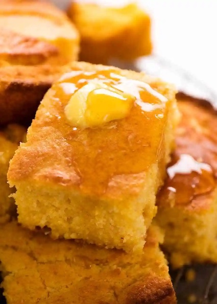

Cornbread recipe
\

Prep: 10 mins
Cook: 25 mins
Servings: 4
INGREDIENTS
- Baking powder
- Yellow cornmeal
- Butter
- Eggs
- Milk
- Salt
- All Purpose flour
- Granulated sugar
METHOD
- Grease a 9-inch round cake pan or cast iron skillet well and set aside. Preheat the oven to 400 degrees F.
- In a medium mixing bowl, add the flour, cornmeal, sugar, salt, and baking powder. Whisk to combine well.
- Make a well in the center of your dry ingredients and add your oil or butter, milk, and egg. Stir just until the mixture comes together and there are only a few lumps remaining.
- Pour the batter into the prepared pan and bake for 20-25 minutes until the top is a deep golden brown and a toothpick inserted into the center comes out clean.
- Serve hot.
HOME